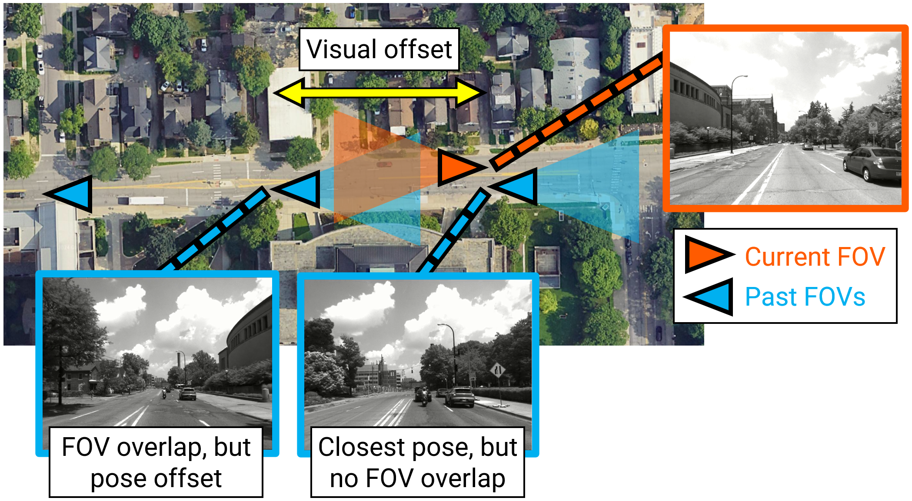
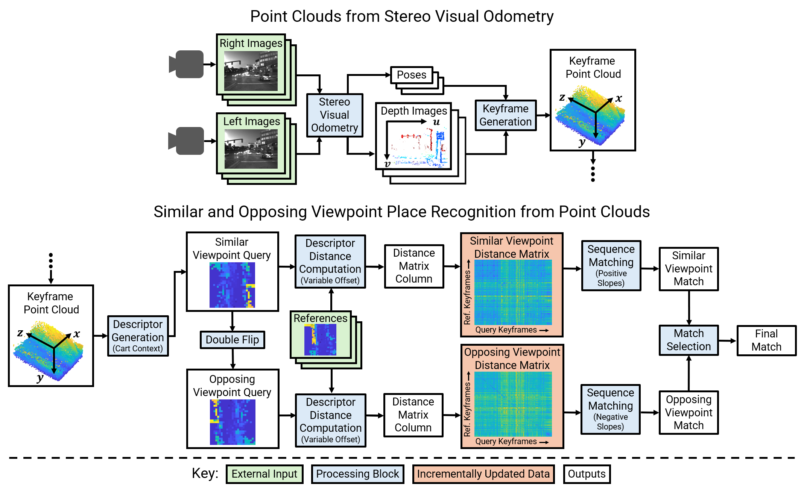
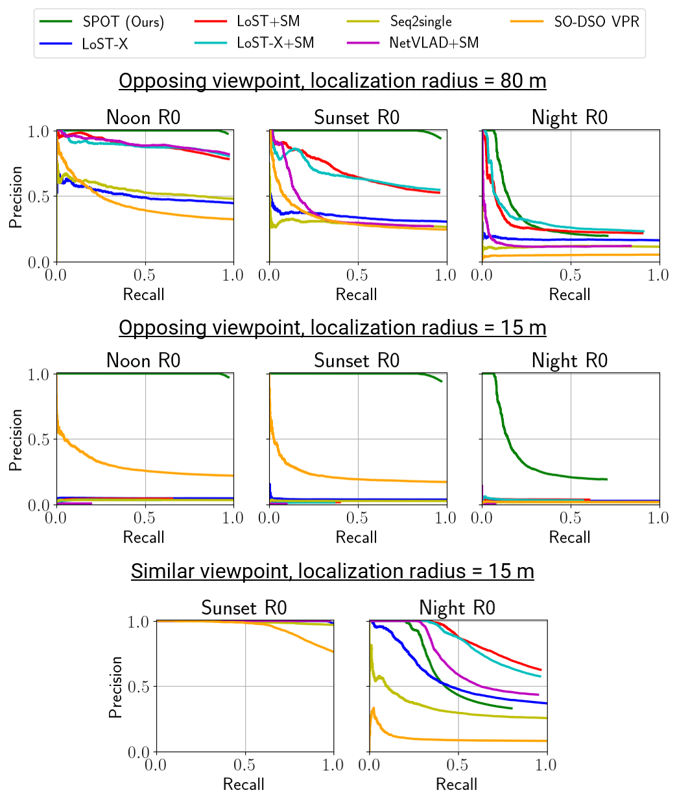

Point Cloud Based Stereo Visual Place Recognition for Similar and Opposing Viewpoints
ICRA 2024
Spencer Carmichael1
Rahul Agrawal1*
Ram Vasudevan1,2
Katherine A. Skinner1
specarmi@umich.edu
rahulagr@umich.edu
ramv@umich.edu
kskin@umich.edu
1Robotics Department, University of Michigan, Ann Arbor
2Department of Mechanical Engineering, University of Michigan, Ann Arbor
*Rahul Agrawal contributed to this work while employed at the University of Michigan.
Paper (IEEE)
Preprint with Appendix (arXiv)
Code
Place Recognition Example:
Queries: forward direction at sunset, References: reverse direction at noon
Abstract
Recognizing places from an opposing viewpoint during a return trip is a common experience for
human drivers. However, the analogous robotics capability, visual place recognition (VPR) with limited field
of view cameras under 180 degree rotations, has proven to be challenging to achieve. To address this
problem, this paper presents Same Place Opposing Trajectory (SPOT), a technique for opposing viewpoint VPR
that relies exclusively on structure estimated through stereo visual odometry (VO). The method extends
recent advances in lidar descriptors and utilizes a novel double (similar and opposing) distance matrix
sequence matching method. We evaluate SPOT on a publicly available dataset with 6.7-7.6 km routes driven in
similar and opposing directions under various lighting conditions. The proposed algorithm demonstrates
remarkable improvement over the state-of-the-art, achieving up to 91.7% recall at 100% precision in
opposing viewpoint cases, while requiring less storage than all baselines tested and running faster than all
but one. Moreover, the proposed method assumes no a priori knowledge of whether the viewpoint is
similar or opposing, and also demonstrates competitive performance in similar viewpoint cases.
Background: The Visual Offset
The goal of place recognition is typically to match a query image with the reference image
captured at the physically closest location. This is especially challenging in opposing viewpoint place
recognition because the physically closest reference may share no visual information with the query while
the reference with the greatest visual overlap is likely separated by a significant distance, called the
visual offset. This offset may be difficult to overcome in subsequent relative pose estimation
(which is necessary for loop closure in SLAM). SPOT avoids the visual offset problem by forming place
descriptors that capture the structure surrounding the camera, rather than being limited to the
field-of-view (FOV) of a single image.

System Overview
The SPOT system takes stereo images as input and outputs place recognition matches at selected
keyframes. The entry point of the system is a stereo visual odometry algorithm, SO-DSO, which produces
estimated poses and sparse depth images with absolute scale. These estimates are accumulated to form point
clouds at selected keyframe poses. Next, Cart Context query descriptors are formed from the point clouds,
providing coarse, bird's-eye view representations of the structure surrounding the keyframe poses. The query
descriptors are flipped about both axes to yield second versions that are similar to that which would have
been produced from the opposing view. Distances are computed between both versions of each query and all
references, using a variable offset technique that lends robustness to lateral shifts. The distances from
the two versions of each query contribute to separate distance matrices that individually capture similar
and opposing viewpoints. Sequence matching is performed with each distance matrix and the final reference
match is selected from the results.

Selected Results
We tested SPOT on the NSAVP dataset, which includes two routes driven in both the forward and
reverse directions. The sequences capture a variety of lighting conditions, scene types
(urban vs. suburban), traffic conditions, road widths (two vs. four lanes), and lateral gaps between
opposing lanes (e.g., medians and turns lanes). We form reference descriptor databases for each route from
sequences collected at noon (using 6.7 and 7.6 km subsets of the R0 and R1 routes respectively), and test
with queries from all other sequences. The results from the R0 route are shown below. The plots are
organized into similar and opposing viewpoints and the plot titles denote the time of day the queries were
collected. SPOT outperforms the baselines in opposing viewpoint cases and avoids the visual offset,
performing well even with a 15 m localization radius. SPOT is also competitive in similar viewpoint cases
and is robust to a variety of lighting conditions, except poorly lit areas at night where the surrounding
structure is difficult to observe.

Citation
@inproceedings{spot_vpr_2024,
author={Carmichael, Spencer and Agrawal, Rahul and Vasudevan, Ram and Skinner, Katherine A.},
booktitle={2024 IEEE International Conference on Robotics and Automation (ICRA)},
title={{SPOT}: Point Cloud Based Stereo Visual Place Recognition for Similar and Opposing Viewpoints},
month={May},
year={2024},
pages={1752-1758}}